Product Overview
The reception and banquet hall represents the first impression of any hotel, resort or convention center. Our reception furniture and banquet hall furniture collections are designed to withstand the rigors of daily hospitality operations while delivering the visual impact that sets the tone for your property's brand identity.
As a hospitality FF&E integrator based in Foshan — China's furniture manufacturing capital — we coordinate 19 specialized partner factories to deliver complete reception and banquet packages on a single purchase order. From the reception desk and reception seating to banquet hall tables, banquet hall chairs, banquet hall lighting and decorative reception cabinets, every piece is manufactured to your interior designer's exact specifications.
Whether outfitting a 200-room business hotel lobby or a 1,000-seat grand ballroom, our reception sofa, reception chair and banquet hall sofa ranges scale to meet project demands without compromising on craftsmanship or lead time consistency.
Product Gallery
Reception, banquet and dining seating from our current range. Frames, foams and covers are specified per project; stacking versions, linking versions and armchair variants are available on request.
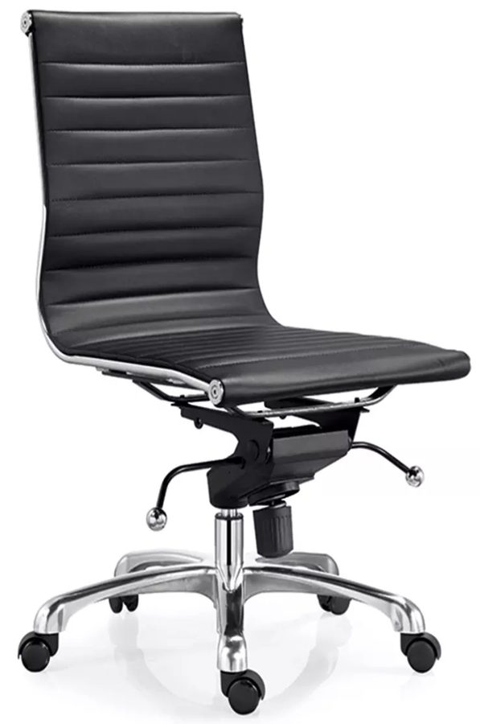
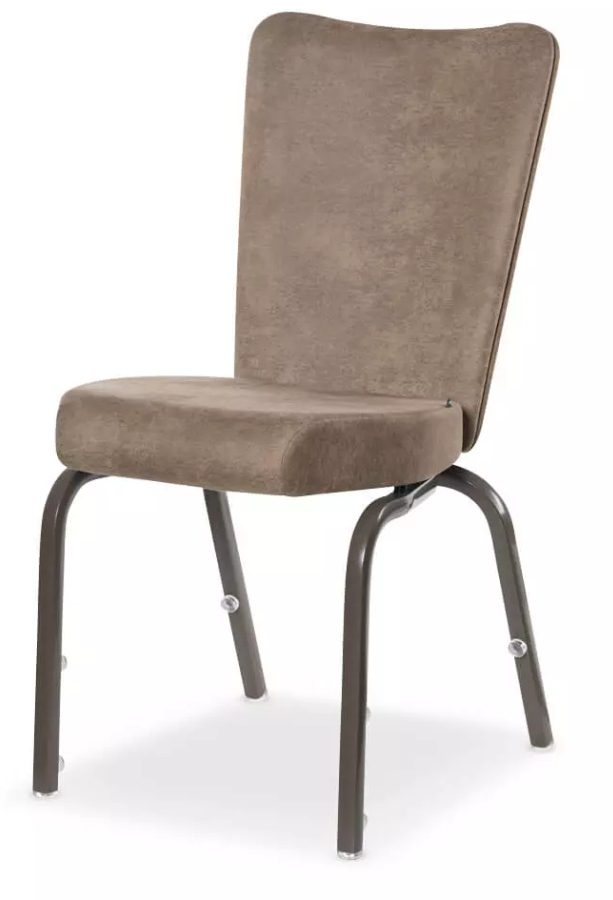
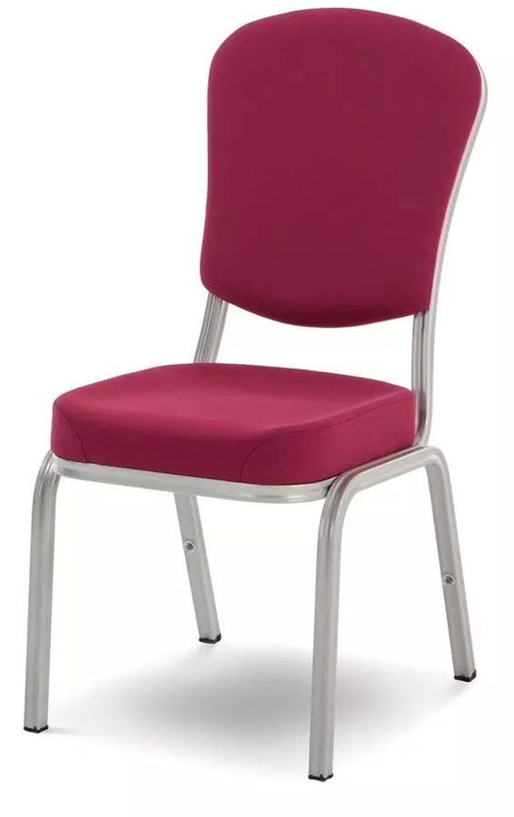
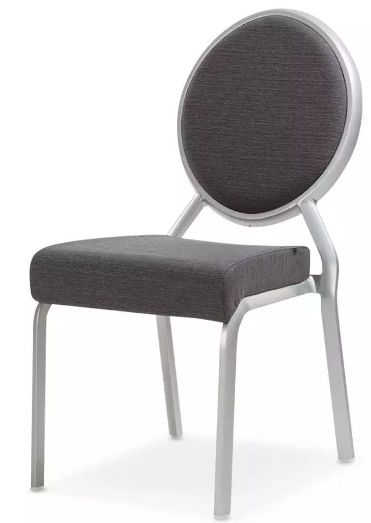
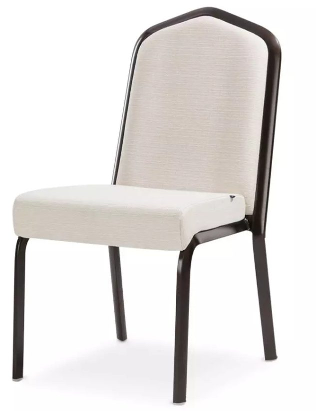
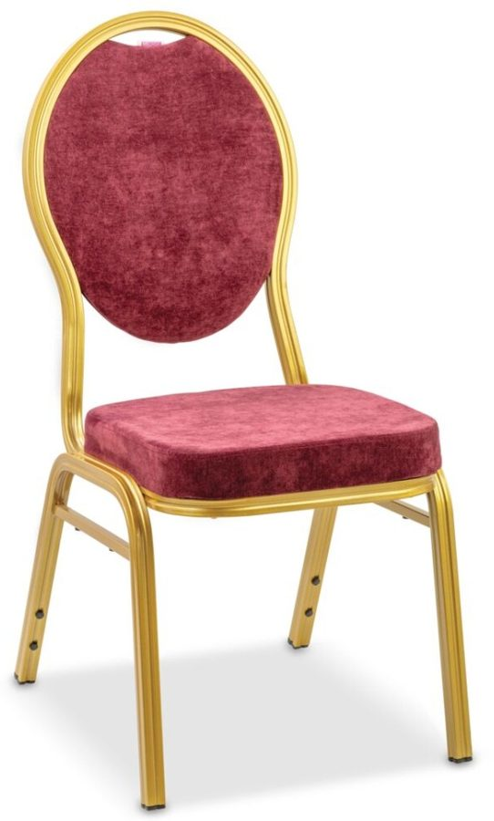
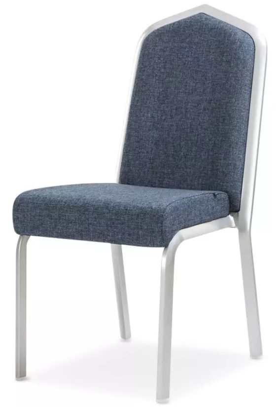
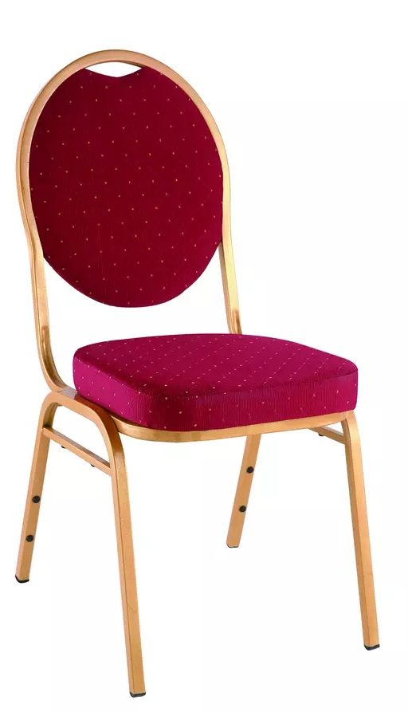
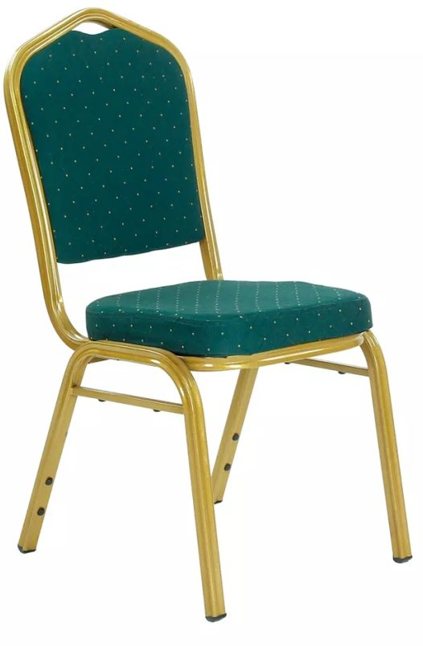
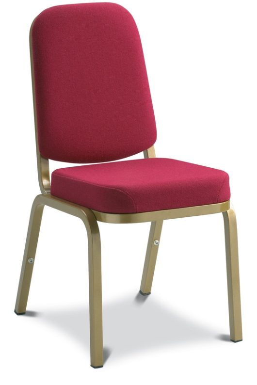
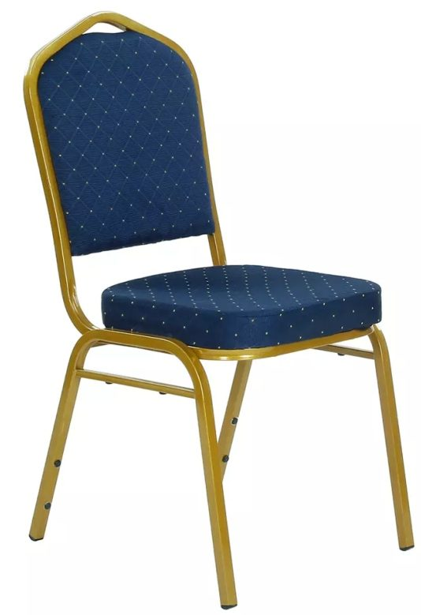
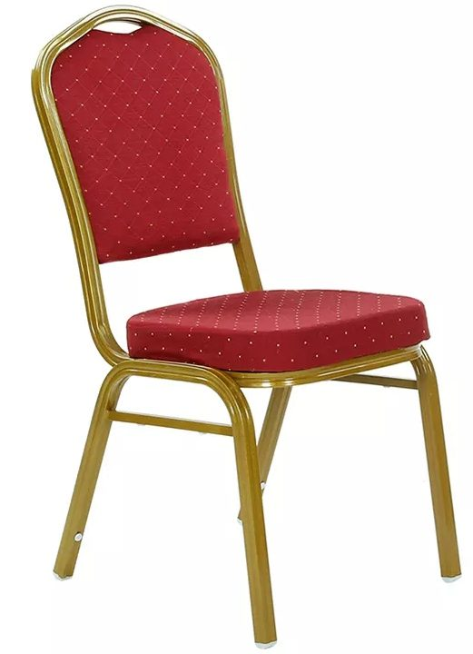
Product Categories
- Reception Desk: Custom reception desks in natural stone tops, solid wood veneers, Corian, or brushed metal finishes. Integrated cable management, LED accent strips, and ADA-compliant height options.
- Reception Seating: Reception sofas (2-seat, 3-seat, modular), reception chairs with arms, and lounge seating. Frame options include kiln-dried hardwood, powder-coated steel, and brushed brass.
- Reception Table: Coffee tables, console tables, and end tables in marble, travertine, solid wood, or engineered stone. Matching reception cabinet and sideboard options available.
- Reception Lighting: Decorative reception lighting including pendant fixtures, wall sconces, floor lamps, and chandeliers. UL-listed and CE-certified for global compliance.
- Reception Cabinet: Display cabinets, credenzas, storage units, and decorative consoles. Soft-close hinges, adjustable shelving, and integrated LED display lighting.
- Banquet Hall Table: Foldable banquet tables, round banquet tables (5ft–8ft diameter), rectangular conference tables. Solid wood, veneer, HPL laminate, or stone tops.
- Banquet Hall Chair: Stackable Chiavari chairs, padded banquet chairs, cross-back chairs, and throne chairs. Fabric, leatherette, or vinyl upholstery with fire-retardant foam.
- Banquet Hall Sofa & Banquet Hall Decor: Stage sofas, VIP lounge seating, decorative banquet hall sofas, and accent pieces. Coordinating banquet hall cabinet and banquet hall fixture packages available.
Customization Options
Every piece in our reception and banquet hall collection is fully customizable to match your interior design specifications:
- Dimensions: Custom sizes to fit any floor plan. We work from your CAD drawings or provide space planning assistance.
- Materials: Solid wood (oak, walnut, ash, maple), wood veneer (natural or reconstituted), HPL laminate, Corian, natural stone (marble, travertine, granite), brushed metal (stainless steel, brass, copper).
- Upholstery: Commercial-grade fabric (Martindale 50,000+), genuine leather, PU leather, vinyl. Fire-retardant treatments available (BS 5852, CAL TB 117, NFPA 260 Class I).
- Colors & Finishes: Full RAL color matching. Stain options from light oak to espresso black. Brushed, polished, or antique metal finishes.
- Hardware: Blum, Hettich, or DTC soft-close hinges and slides. Custom pull handles in brass, stainless steel, or leather-wrapped options.
Technical Specifications
| Specification | Standard Range |
|---|---|
| Frame Material | Kiln-dried hardwood (moisture 8–12%), plywood (E0/E1 grade), powder-coated steel |
| Wood Veneer | 0.6mm natural veneer, 0.5mm reconstituted veneer, cross-banded plywood substrate |
| Surface Finishes | PU lacquer (matte/satin/gloss), melamine, HPL laminate, natural oil, UV coating |
| Upholstery Foam | High-resilience foam (density 35–45 kg/m³), fire-retardant options available |
| Stone Options | Natural marble, travertine, granite; engineered quartz; Corian solid surface |
| Fire Rating | BS 5852 (UK), CAL TB 117 (US), NFPA 260 Class I, EN 1021 (EU) |
| Weight Capacity (Banquet Chair) | ≥150 kg static load, BIFMA X5.4 tested |
| Warranty | 2 years structural, 5 years frame (commercial use) |
Minimum Order Quantity & Lead Time
| Item Category | MOQ | Production Lead Time |
|---|---|---|
| Reception Desk | 2 pcs | 35–45 days |
| Reception Sofa / Chair | 10 pcs | 30–40 days |
| Reception Table / Cabinet | 5 pcs | 30–40 days |
| Banquet Hall Table | 20 pcs | 25–35 days |
| Banquet Hall Chair | 50 pcs | 25–35 days |
| Banquet Hall Sofa / Decor | 5 pcs | 35–45 days |
| Banquet Hall Lighting | 10 pcs | 30–40 days |
| Full Reception + Banquet Package | 1 project | 45–60 days |
Quality Standards & Certifications
All reception furniture and banquet hall furniture undergoes rigorous quality control at every production stage:
- Material Testing: Wood moisture content verification, veneer adhesion testing, fabric abrasion testing (Martindale ≥50,000 cycles)
- Structural Testing: BIFMA X5.4 (banquet chairs), BIFMA X5.5 (desk/table), load testing per ANSI/BIFMA standards
- Fire Safety: Foam and fabric fire-retardant certification, BS 5852 / CAL TB 117 / NFPA 260 compliance
- Environmental: CARB P2 / TSCA Title VI (formaldehyde emission), FSC chain-of-custody available, low-VOC finishes
- Inspection: Three-stage QC (in-process, pre-assembly, pre-shipment). Third-party inspection available (SGS, TÜV, Bureau Veritas)
- Packaging: Export-grade carton + EPE foam + wooden crate for ocean freight
Applicable Project Types
- Luxury 5-star hotel lobbies and reception areas
- Convention center ballrooms and pre-function lobbies
- Resort banquet halls and wedding venues
- Business hotel conference and event spaces
- Mixed-use developments with hospitality components
- Cruise ship reception and dining areas
- Casino hotel banquet and event facilities
Why Source From foshanFFE.com
As a hospitality FF&E integrator — not a trading company — we coordinate 19 specialized Foshan partner factories under one supplier-of-record. This means one PO for your reception desk, reception seating, banquet hall tables, banquet hall chairs, banquet hall lighting, and all reception cabinet and banquet hall decor. One quality standard, one delivery schedule, one container (or multiple) shipped direct from Foshan to your project site.
Our project portfolio includes FF&E packages for international hotel brands across the Middle East, Southeast Asia, and the Americas. Every reception and banquet hall furniture package includes 3D rendering review, production samples, and pre-shipment inspection before loading.
Reception & Banquet Furniture Specifications
| Category | Reception/Desk Area | Banquet Hall | Ballroom |
|---|---|---|---|
| Primary Materials | Solid wood, stone, leather | Upholstered chairs, metal frames | Fire-retardant fabric, hardwood |
| Fire Standard | BS 7177 Medium Hazard | BS 7177 High Hazard | BS 7177 High Hazard |
| MOQ | 5 sets | 50 chairs | 100 chairs |
| Lead Time | 45-60 days | 30-45 days | 45-60 days |
| Custom Options | Dimensions, veneer, stone top | Fabric, foam density, frame color | Fabric, cushion thickness |
Frequently Asked Questions
Q: What is the difference between reception furniture and banquet hall furniture?
A: Reception furniture (front desks, concierge stations, lobby seating) uses premium materials like solid wood, natural stone, and leather because it creates the first impression. Banquet hall furniture prioritizes durability and stackability — metal-frame chairs, padded seats, and easy-clean surfaces. foshanFFE.com customizes both categories to your brand while meeting their different functional requirements.
Q: How many banquet chairs should I order for a hotel ballroom?
A: A typical hotel ballroom (500-800 sqm) seats 300-500 guests in theater style or 200-350 in banquet style. foshanFFE.com recommends ordering 10-15% above your maximum capacity for replacements and future expansion. We provide stackable banquet chairs with anti-slip feet, tablet arms (optional), and numbering systems for efficient storage.
The other seven collections
Most hotel packages are not bought from one collection. These are the other production lines in the same programme — same inspection standard, same consolidation, one purchase order.
Ready to Start Your Project?
Send us your floor plans, interior design drawings, or procurement list. Our team will respond within 24 hours with a detailed quotation.
Request a Quote →